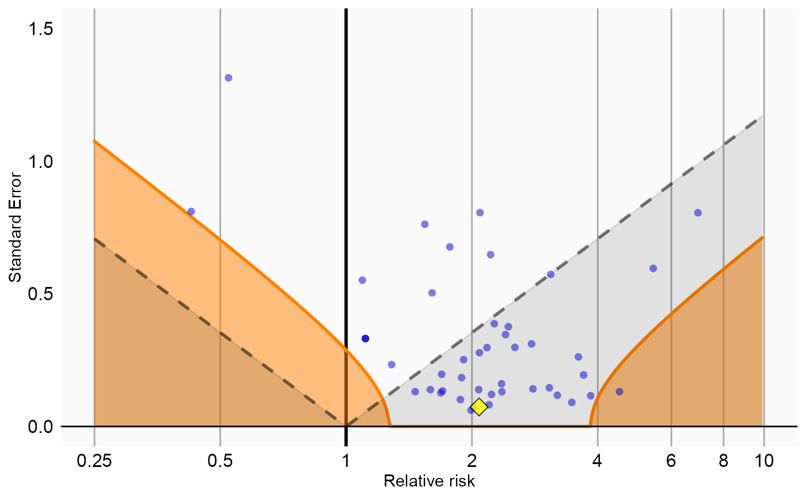

plotCalibrationEffect creates a plot showing the effect of the calibration.
plotCalibrationEffect(logRrNegatives, seLogRrNegatives, logRrPositives = NULL, seLogRrPositives = NULL, null = NULL, alpha = 0.05, xLabel = "Relative risk", title, showCis = FALSE, fileName = NULL)
| logRrNegatives | A numeric vector of effect estimates of the negative controls on the log scale. |
|---|---|
| seLogRrNegatives | The standard error of the log of the effect estimates of the negative controls. |
| logRrPositives | Optional: A numeric vector of effect estimates of the positive controls on the log scale. |
| seLogRrPositives | Optional: The standard error of the log of the effect estimates of the positive controls. |
| null | An object representing the fitted null distribution as created by the
|
| alpha | The alpha for the hypothesis test. |
| xLabel | The label on the x-axis: the name of the effect estimate. |
| title | Optional: the main title for the plot |
| showCis | Show 95 percent credible intervals for the calibrated p = alpha boundary. |
| fileName | Name of the file where the plot should be saved, for example 'plot.png'.
See the function |
A Ggplot object. Use the ggsave function to save to file.
Creates a plot with the effect estimate on the x-axis and the standard error on the y-axis. Negative controls are shown as blue dots, positive controls as yellow diamonds. The area below the dashed line indicated estimates with p < 0.05. The orange area indicates estimates with calibrated p < 0.05.
data(sccs) negatives <- sccs[sccs$groundTruth == 0, ] positive <- sccs[sccs$groundTruth == 1, ] plotCalibrationEffect(negatives$logRr, negatives$seLogRr, positive$logRr, positive$seLogRr)